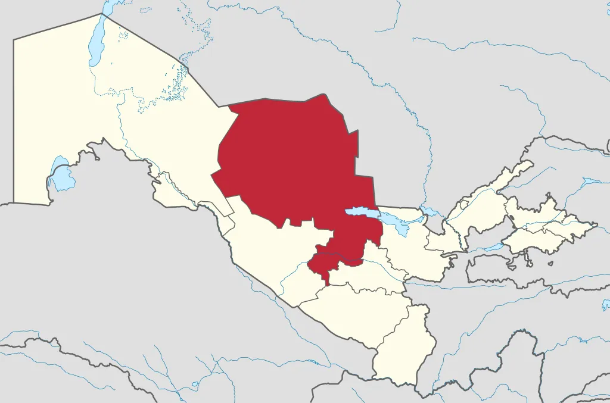

Navoiy viloyati
Navoiy viloyati — Oʻzbekiston Respublikasi tarkibidagi viloyat. 1982-yil 20-aprelda Buxoro va qisman Samarqand viloyatlari hududlaridan tashkil etilgan. 1988-yilda maʼmuriy birlik sifatida tugatilib, 1992-yil boshida qayta tiklandi. Shimoliy va shimoli-sharqdan Qozogʻiston, janubi-sharqdan Jizzax, Samarqand, jan.dan Qashqadaryo, janubi-gʻarbdan Buxoro viloyatlari bilan chegaradosh. Maydoni 111,0 ming km². Aholisi 802,3 ming kishiga yaqin (2003). Navoiy viloyati tarkibida 8 qishlok tumani (Konimex, Navbahor, Navoiy, Nurota, Tomdi, Uchquduk, Xatirchi, Qiziltepa, 5 shahar (Zarafshon, Qiziltepa, Navoiy, Nurota, Uchquduq), 8 shaharcha (Konimex, Langar, Malikrabot, Muruntov, Tinchlik, Shalqar, Yangirabot, Gʻozgʻon) va 53 qishlok fukarolari yigʻini bor (2003).
Navoiy viloyatida dastlabki radio-eshittirishlar 1982-yilda boshlangan. 1982-yildan viloyatda telestudiya tashkil etilib telekoʻrsatuvlar berila boshladi. Viloyatda shuningdek, „Qizilqum“ (2002-yildan) nodavlat telekanali koʻrsatuvlar olib boradi. Meʼmoriy yodgorliklar. N.vda kad. davr, ilk va oʻrta asrlarda qurilgan 10 dan ziyod meʼmoriy yodgorliklar bor. Shulardan qad. Karmanadagi Mirsaid Bahrom maqbarasi (11-asr), Qosim Shayx meʼmoriy majmuasi (16-asr), Katta Gumbaz masjidi (17—18-asrlar), Qiziltepa tumani Vangʻozi qishlogʻidagi Toshmachit (16— 19-asrlar), Nurota tumanidagi Abdullaxon bandi (16-asr), Buxoro — Navoiy yoʻlidagi Raboti Malik karvonsaroy va sardobasi (11-asr) mashhur. Viloyatda 30 ga yaqin arxeologiya yodgorliklari mavjud. Ayniqsa, Navbahor tumani Uchtut qishlogʻidagi shaxta (neolit davri), Nurota tumani hududidagi Qoratogʻda oʻyib yozilgan qoyatosh yozuvlari (miloddan avvalgi 3-asr) va boshqa tarixchilar diqqatidadir.
Navoiy viloyati Oʻzbekiston Respublikasi hududining oʻrta qismida joylashgan boʻlib, Qizilqum sahrosining kattagina qismini egallaydi. Uning maydoni 110,8 ming km² ga teng, bu jihatdan u eng katta viloyat hisoblanadi. Navoiy viloyati gʻarbda Qoraqalpogʻiston, shimolda Qozogʻiston, sharqda Jizzax, janubda Qashqadaryo va Buxoro viloyatlari bilan chegaralanadi.